Commercial glass
Storefronts, entrance doors and glass for business spaces.
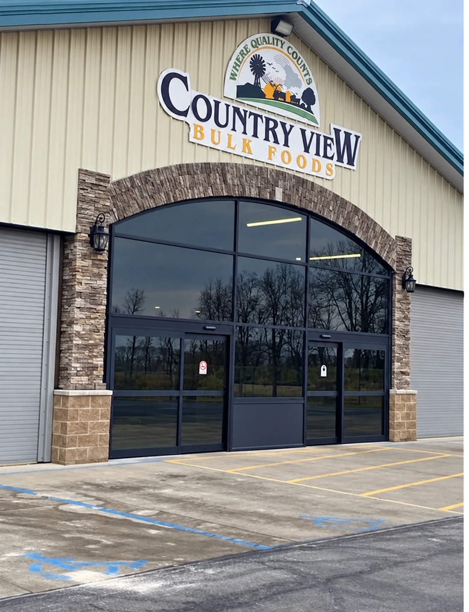
Dave’s Glass · Caro, MI
For your home, your business and your vehicle. Tell us what you’re working on.
Get a quote Explore our work →Commercial glass · Country View storefront
What we do
From a damaged pane to a new glass enclosure, start with a call to our Caro shop.
Storefronts, entrance doors and glass for business spaces.
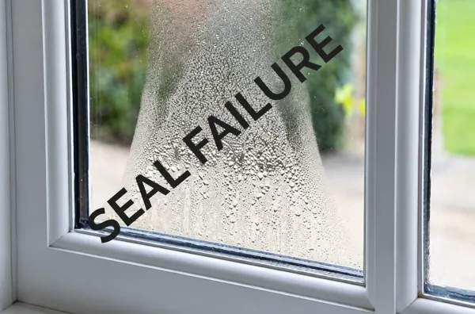
Window glass replacement and repairs, including fogged panes.
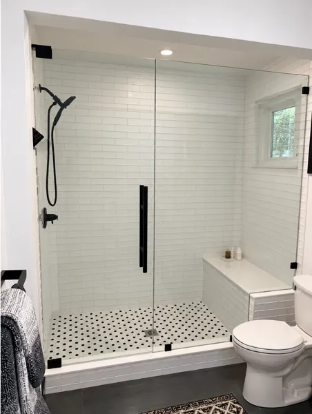
Glass enclosures and doors to suit your bathroom.
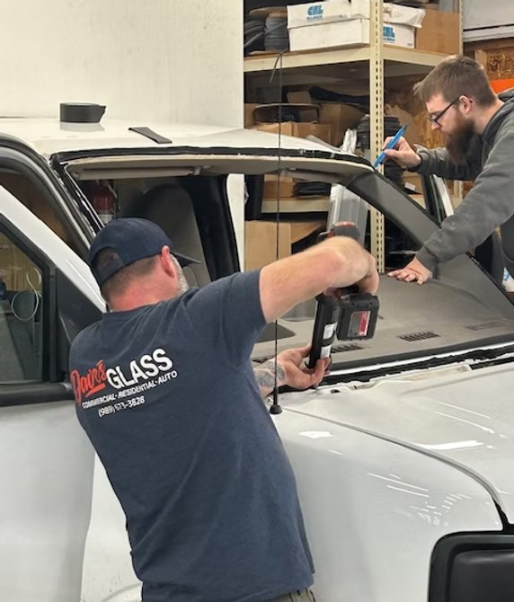
Windshield replacement and auto glass repairs.
Service illustrations shown above. Explore project photos below.
Our work
Storefronts, architectural glass and shower enclosures.
Choose a photo to view the full scene.
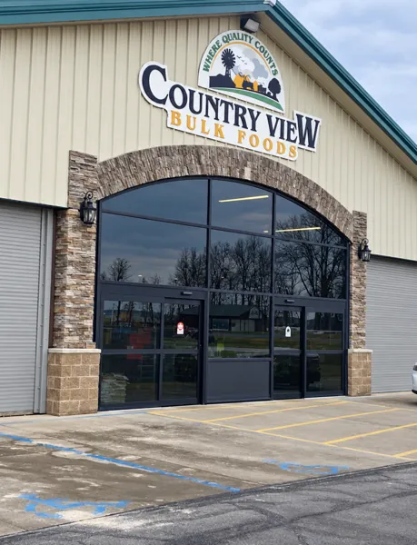
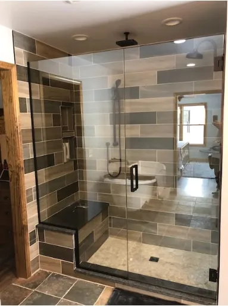
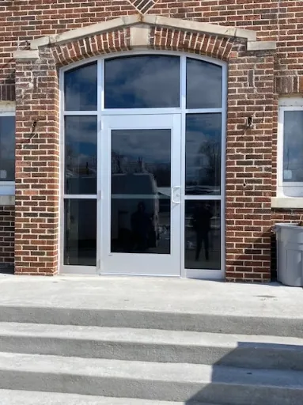
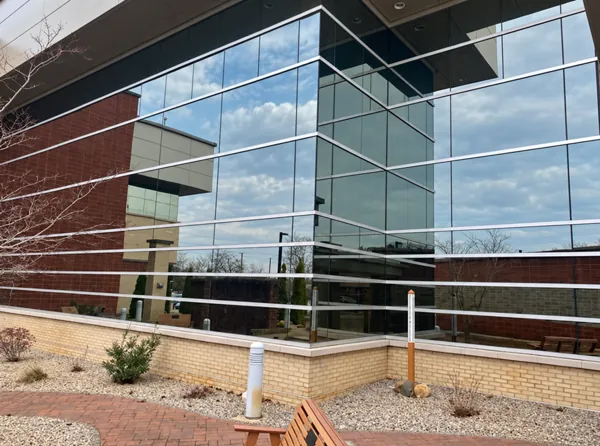
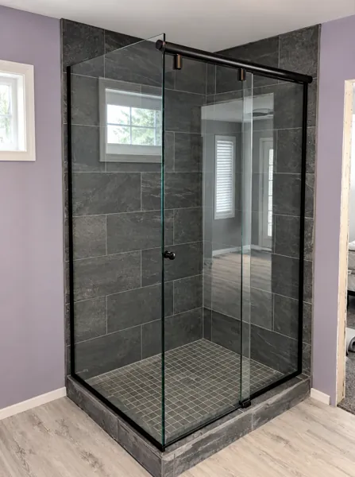
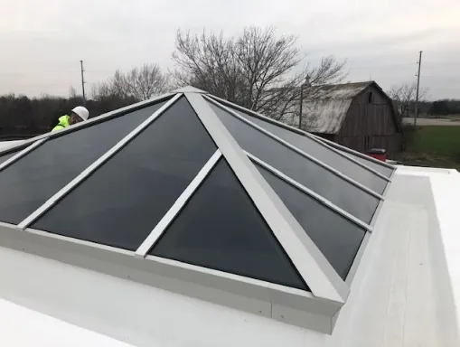
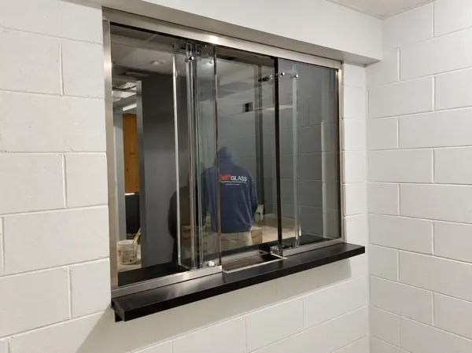
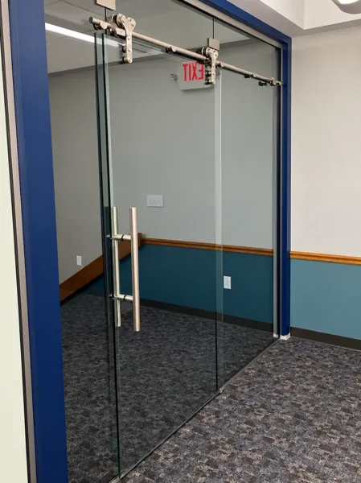
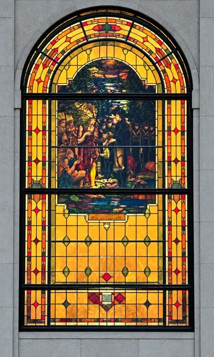
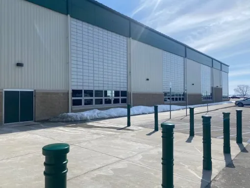
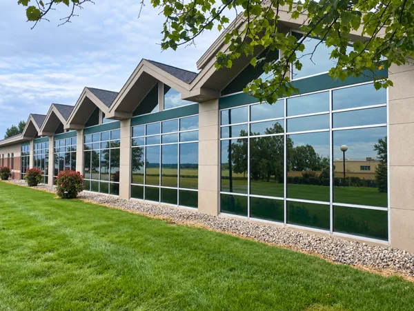
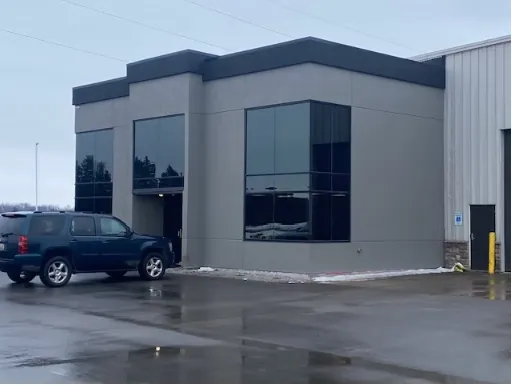
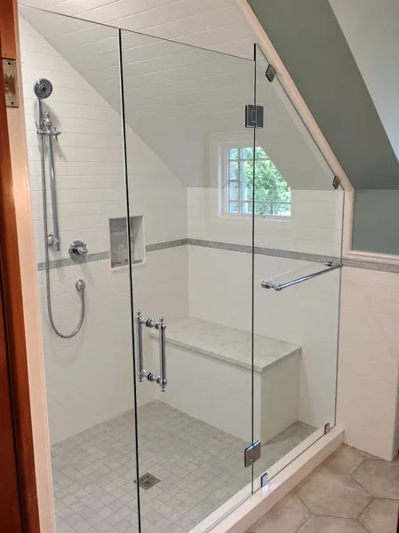
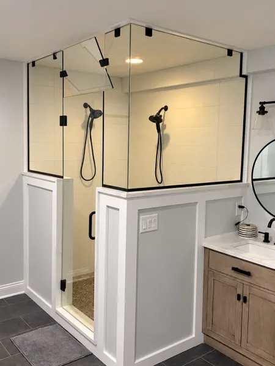
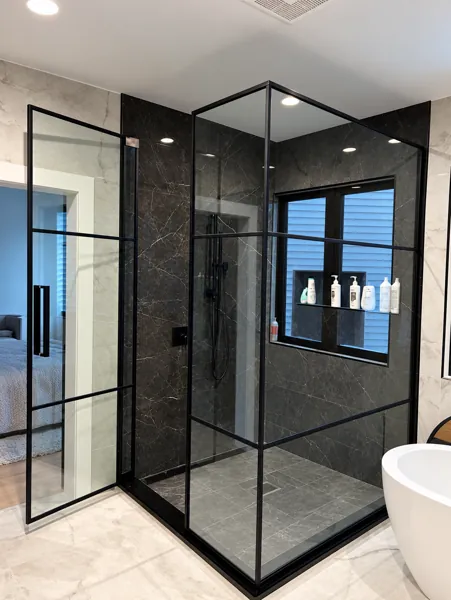
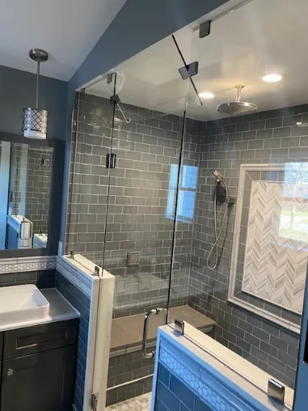
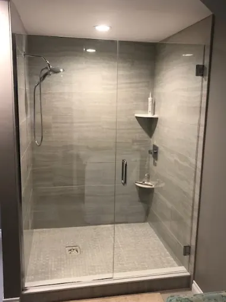
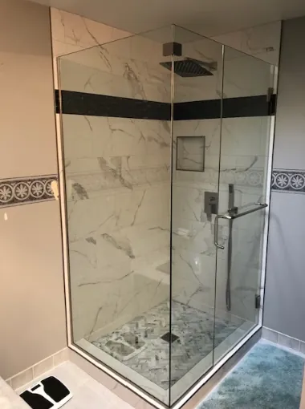
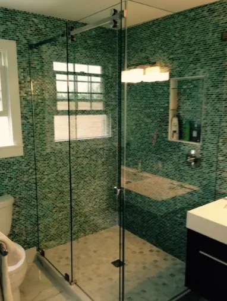
About Dave’s Glass
Dave’s Glass serves Michigan’s Greater Thumb with commercial, residential, shower and auto glass services. Visit the shop on West Caro Road or get in touch to discuss your project.
Other services
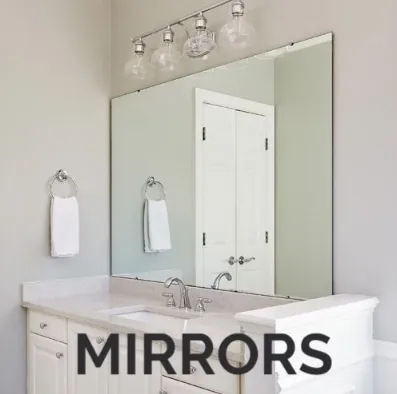
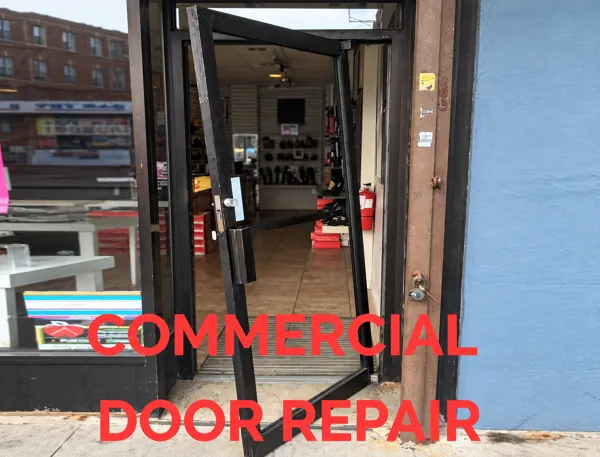
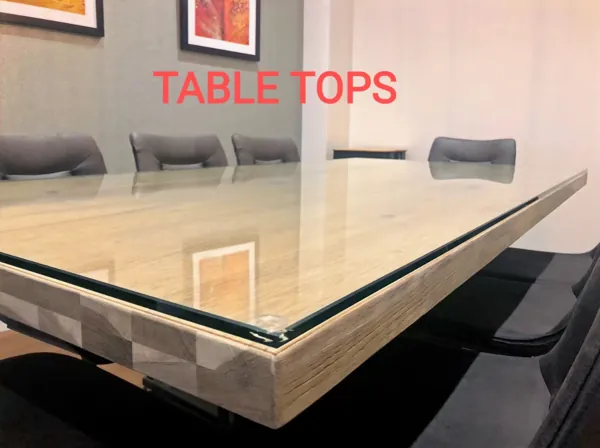
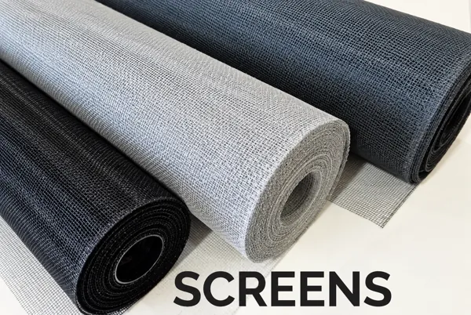
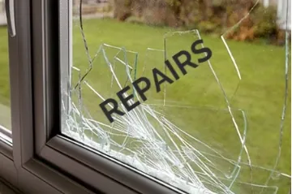
These labeled images illustrate services, rather than a project portfolio.
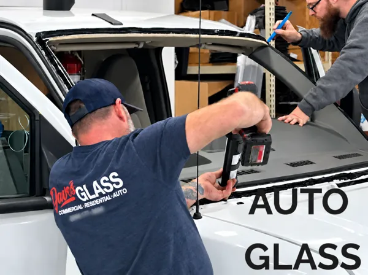
Let’s talk glass
This form opens your email app. Your message is not sent until you send it there. There is no online submission.
No email app? Copy the message into your webmail and send it to office@davesglassllc.com. Your fields stay here.